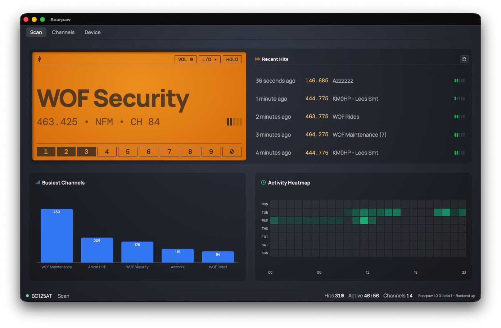

The Scan Tab
The Scan tab shows what the radio is doing right now, gives you the controls you reach for most, and keeps a record of what's been active. The big amber panel is front and center. To its right is the Recent Hits list; below are two dashboards, Busiest Channels and the Activity Heatmap; and the status bar runs along the very bottom of the window.

The big display
This is your scanner's screen, enlarged.
The display scales to whatever size you give it. Maximize the window and the frequency, tag, and signal bars grow to fill it. Put Bearpaw on a spare monitor in the shack and you can read what your scanner is doing from the workbench, the couch, or the other end of the room.
While scanning
When the scanner is cycling through channels looking for activity, the display reads "Scanning…" (pulsing) with "Searching for signal…" beneath it.
During a hit
When the scanner stops on an active frequency, the display switches to a stable readout:
- The big line shows the channel's alpha tag (its saved name, like "FIRE DISPATCH") if it has one. A channel with no name shows the frequency instead.
-
The detail line underneath is built from whatever's
available, separated by dots:
146.850 • FM • CH 12 • CTCSS 123.0. That's the frequency, the modulation, the channel number, and the tone the transmission carries (which shows only while the signal is live). - The signal bars on the right fill according to strength.
Other states
- Syncing: "Syncing Scanner Memory" with progress text, and a panel covers the screen. (See memory sync.)
- Disconnected: "Scanner Offline" with a plain-language reason, and the USB icon shows an error.
The controls
Four kinds of control live on the display: VOL, L/O, HOLD, and the row of bank buttons.
VOL: volume
Click VOL to open a slider. Volume runs 0 to 15. Dragging it changes the scanner's speaker level, live.
HOLD: park on the current channel
HOLD stops the scanner cycling and parks it on wherever it is right now. Press it again to resume scanning.
The button always says "HOLD". It doesn't flip to "SCAN" when the scanner is held. When Hold is active the button is highlighted (filled, with amber text).
L/O: lock out a frequency
Lockout tells the scanner to skip something, which is handy for a frequency you don't care about. The L/O button opens a small menu with two choices:
- Temporary: skips the frequency you're currently on, until the scanner is powered off.
- Permanent: writes the lockout into the channel's memory, so it stays skipped across power cycles.
Both are toggles. Pick the same option again to remove the lockout. A message at the top of the screen confirms each action, naming the channel and whether it was enabled or cleared.
If you set a permanent lockout by mistake, choose Permanent again while on that channel to clear it, or remove it from the Locked Channels list on the Device tab.
The bank buttons (1 to 9, then 0)
Along the bottom are ten buttons: 1 through 9, then 0 (that last one is bank 10). Your 500 channels are split into ten banks of 50, and these buttons turn each bank on or off for scanning:
- Highlighted (filled, amber number): the bank's 50 channels are included in the scan.
- Outlined (dark number): the bank's 50 channels are skipped.
Activity tracking
While it's running, Bearpaw keeps a record of every signal your scanner stops on, and turns that record into a picture of what's active around you: which channels carry the most traffic, and when. Three surfaces on the Scan tab show it, and you can export the raw data to CSV.
Recent Hits
To the right of the display, Recent Hits lists the five most recent active frequencies, newest at the top. Each row shows:
- How long ago it happened ("just now", "2 minutes ago"), which updates as time passes.
- The frequency.
- The tag (the channel's name), or a dash if it has none.
- A mini signal-strength meter for that hit.
Repeated hits are grouped. When the same channel
hits several times in a row, they collapse into a single row with a
count — WOF Rides (6) means that channel was active six
times back-to-back. The time shown is the most recent of those hits,
and the signal meter is their average. A hit from a different channel
starts a new row, so an alternating pattern still shows each channel
separately.
A transmission has to last at least a minimum length of time (2 seconds by default) to show up here. Brief static bursts and key-ups are ignored. You can change that threshold under Preferences → Hit Minimum Duration.
The dashboards
Below the display, two charts turn the log into a picture of your local activity.
Busiest Channels
A bar chart of your most active channels of all time, tallest bar first, labeled by channel name.
Activity Heatmap
A grid of 7 days by 24 hours: one row per day (Monday to Sunday), one column per hour. The brighter a cell, the more hits happened in that day-and-hour, over the last 7 days. Hover any cell to see the exact count.
Busiest Channels is all-time; the Heatmap is a rolling week. Both count only hits that met the minimum-duration threshold.
The status bar
The strip along the bottom of the window is visible on every tab.
On the left: the connection dot and label.
- 🟢 green plus your scanner's model name: connected
- 🟡 yellow plus "Connecting…": establishing the link
- 🔴 red plus "Disconnected": no connection (see Troubleshooting)
Then the name of the tab you're on.
On the right (Scan tab only): three running session counts.
- Hits: how many hits this session.
- Active: total time signals were actually active this session, shown as minutes:seconds. This is airtime, not a clock time.
- Channels: how many different channels have gone active this session. Not the number of channels in your scanner, the number that have had traffic.
Exporting your activity data
Click the small export icon in the Recent Hits header, or press Ctrl/⌘ + Shift + L. (It's greyed out until there's something to export.) The dialog lets you pick a date range and download the matching hits as a CSV file.
Each row is one hit, with its timestamp, frequency, channel, tag, and how long the signal lasted. Open it in a spreadsheet and you can feed the data into whatever analysis you like.
This is your activity log, the record of what the scanner has heard. It's a different export from the channel files on the Channels tab, which save the channels in the scanner's memory.
Next: The Channels Tab